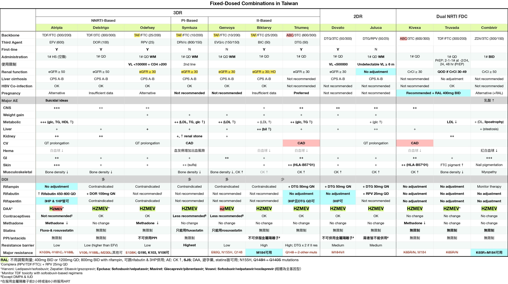
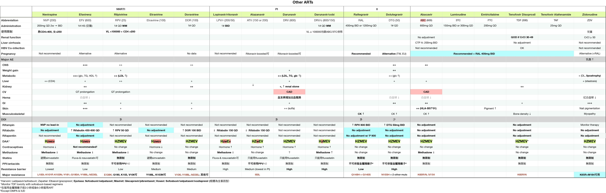
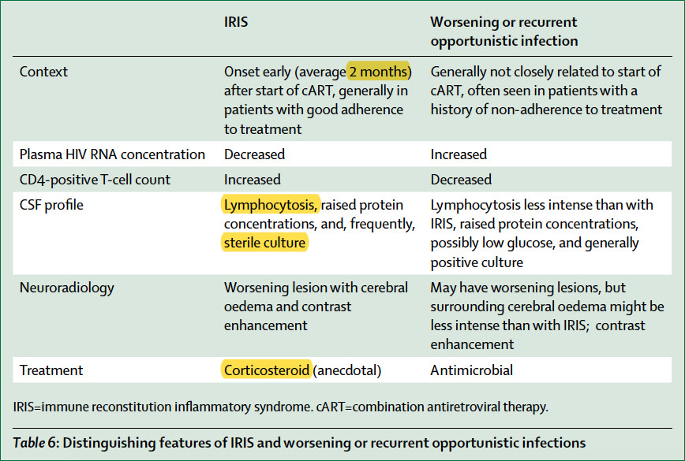
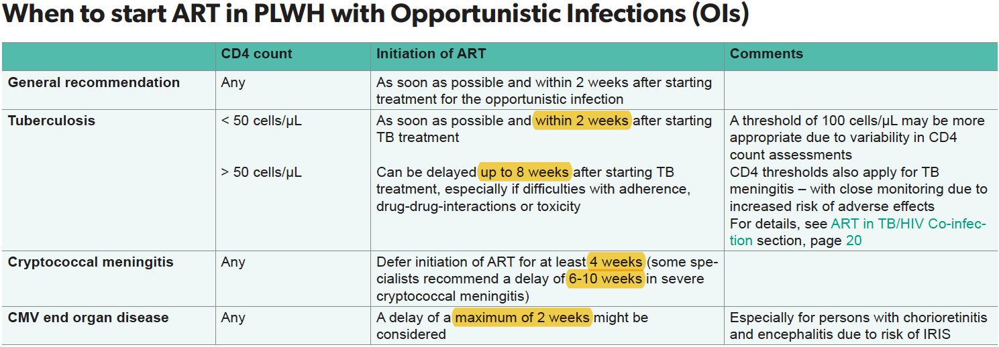
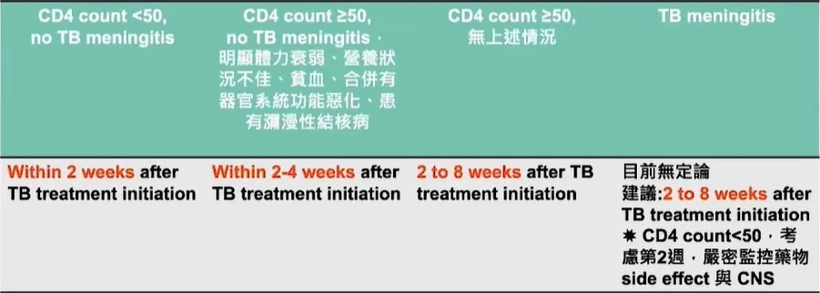

HIV/AIDS¶
source: Pocket Medicine, 2022
Definition & Clinical Manifestations¶
- Acute HIV: rash, lymphadenopathy, fever, oral ulcers, pharyngitis, myalgias, diarrhea
- Presents ˜2-6 wk after exposure; not all HIV infections result in symptoms of acute HIV
- AIDS: HIV + CD4 <200/mm3 or AIDS-defining opportunistic infection (OI) or malignancy
Epidemiology¶
- ˜1.2 million Americans living w/ HIV (13% unaware); ˜37 million worldwide
- High risk groups: MSM, transgender women, IVDU, sex worker, partners of high-risk Pts
- Transmission: sexual (risk 0.1-1% per sex act w/o ARV), needlesticks (occupational or IVDU), vertical (15-40% w/o ARV), transfusions, organ transplant (uncommon in U.S.)
Prophylaxis (NEJM 2015;373:2237; Lancet 2016;387:53; J Infect Dis 2018;218:16; CDC 2021)¶
- Pre-exposure (PrEP): TDF/FTC daily, ↓ transmission >90% if adherent. Consider for serodiscordant partners, condomless sex in high-risk groups, STI w/in 6 mo, IVDU w/ equipment sharing. Rule out HIV prior to initiation, ✓ renal function, STIs, & HIV q3 mo.
- Post-exposure (PEP): start ASAP (within 72 hr) after high-risk exposure from HIV ⊕ source (case-by-case decision if HIV status ?). Test baseline HIV, STIs, HBV, HCV. Rx: 2 NRTIs (usually TDF/FTC) + RAL or DTG × 4 wks. Consider initiating PrEP afterwards.
Screening and Diagnosis (JAMA 2018;320:379)¶
- Screen all 13-64 yo at least once, every preg, if new STI dx; screen high risk annually
- HIV Ab/p24Ag (ELISA assay): ⊕ 1-12 wk after acute infxn; >99% Se; 1° screening test
- If ⊕, Ab differentiation assay confirms and differentiates HIV-1 vs. -2 (MMWR 2013;62:489)
- HIV RNA PCR viral load (VL) in plasma; assay range is 20-10 million copies/mL; false ⊕ can occur, but usually low # copies; in contrast, VL should be high (>750 k) in 1° infection
- CD4 count: not a diagnostic test, because can be HIV ⊕ with normal CD4 or be HIV ⊖ with low CD4
Approach to newly diagnosed HIV ⊕ Pt (CID 2020;73:e3572)¶
- Counsel re: excellent prognosis w/ adherence to treatment, treatment options, & disclosure
- Lab evaluation: CD4 count, HIV viral load & genotype, CBC w/ diff., basic metabolic panel, LFTs, HbA1c, lipids, U/A, PPD/ IGRA, syphilis Ab, Chlamydia & gonorrhea (3 site), Hep A/B/C, G6PD (if high-risk ethnicity), preg screen, HLA-B*5701 if therapy w/ abacavir. If AIDS: CMV IgG, Toxo IgG.
- Confirm all vaccinations (including annual flu) are up to date, avoid live vax if CD4 ≤200
- Initiate ARV early (same day, preferably after labs/genotype and w/ guidance from HIV specialist) regardless of CD4 level because ↓ mortality (NEJM 2015;373:795)
- Treatment prevents transmission to partners. Risk of transmission w/ unprotected sex w/ undetectable VL >6 months is ˜0% (JAMA 2016;316:171; Lancet HIV 2018;5:e438).
- Regimens include: 2 NRTI (eg, TAF + FTC) + either INSTI or boosted PI (eg, DRV/r)
- Initiation of ARVs may transiently worsen existing OIs (TB, MAC, CMV, others) due to immune reconstitution inflammatory syndrome (IRIS). Prednisone during 1st 4 wks of ARVs ↓ risk for TB-associated IRIS, but not routinely given (NEJM 2018;379:1915).
- Do not start ARVs immediately if concern for cryptococcal or TB meningitis
- After ARV initiation, check VL q4 wks until undetectable, then monitor q3-4 mos
Approach to previously established HIV ⊕ Pt¶
- H&P (mucocutaneous, neurocognitive, OIs, malignancies, STDs); meds and adherence
- Review ARVs (past and current); if hospitalized typically continue ARVs, if any must be held, stop all to ↓ risk of resistance
- Regimen failure: cannot achieve undetectable VL after months on ARVs, viral rebound (VL >200 copies/mL ×2 after prior suppression), ↓ CD4 count or clinical worsening
OI Prophylaxis¶
| OI | Indication | 1° Prophylaxis |
|---|---|---|
| Tuberculosis | ⊕ PPD (≥5 mm), IGRA, or high-risk exposure | See treatment for latent TB |
| Pneumocystis jiroveci (PCP) | CD4 <200/mm or CD4 <14% or thrush | TMP-SMX DS qd (first line) or dapsone qd or atovaquone qd or pentamidine inhaled q4wk |
| Histoplasmosis | CD4 <150/mm + endemic/exposure | Itraconazole qd |
| Toxoplasmosis | CD4 <100/mm3_and_ ⊕ Toxo IgG | TMP-SMX DS qd or dapsone 50 mg qd + pyrimeth. qwk + leucovorin 25 qwk |
| MAC | Prophylaxis no longer recommend if effective ARVs initiated | |
| When to stop prophylaxis: PCP and toxo if CD4 >200 × 3 mos; Histo if CD4 >150 × 6 mos |
HAART¶


COMPLICATIONS OF HIV/AIDS¶
| CD4 Count | Complications |
|---|---|
| Any | S. pneumo, TB, VZV, HPV complications, Kaposi's sarcoma, lymphoma, ↑ CVD risk, ↓ bone density. |
| <500 | Constitutional symptom(s). Mucocutaneous: seborrheic dermatitis; psoriasis; oral hairy leukoplakia; HSV. Recurrent bacterial infection |
| <200 | PCP, Toxo, PML, Crypto, candida, Histo/Coccidio (endemic areas) |
| <50-100 | CMV, MAC, CNS lymphoma, invasive aspergillosis, bacillary angiomatosis (dissem. Bartonella), death (<50 is medical emergency) |
| ### Fever workup in patient with HIV/AIDS | |
| #### Etiologies (Infect Dis Clin North Am 2007;21:1013) | |
| - Infection (82-90%): MAC, TB, CMV, early PCP, Histo, Crypto, Coccidio, Toxo, endocarditis | |
| - Noninfectious: lymphoma, drug reaction. | |
| - Non 1° HIV itself rarely (<5%) cause of fever. | |
| #### Workup: guided by CD4 count, s/s, epi, & exposures | |
| - CBC, basic metabolic panel, LFTs, blood culture, CXR, urine analysis, mycobact. & fungal culture, ✓ meds, ? ✓ chest & abd CT | |
| - CD4 <100-200 → serum crypto Ag, urinary Histo Ag, CMV PCR | |
| - Pulmonary s/s → CXR; ABG; sputum for bacterial culture, PJ stain, AFB; bronchoscopy | |
| - Diarrhea → stool cx, O&P, AFB; direct visualization with bx on colonoscopy | |
| - Cytopenias → BM biopsy for path & culture of aspirate including for mycobacteria & fungi | |
| - Headache/visual Δs→ LP; send CSF for bacterial/fungal culture, CrAg, ? MTb PCR; send CMV PCR from serum; dilated eye exam with Ophtho | |
| #### Cutaneous | |
| - Eosinophilic folliculitis; warts (HPV); HSV & VZV; MRSA SSTI; scabies; candidiasis; eczema; prurigo nodularis; psoriasis; drug eruption; subungual onychomycosis | |
| - Molluscum contagiosum (poxvirus): 2-5 mm pearly papules w/ central umbilication | |
| - Kaposi's sarcoma (KSHV or HHV8): red-purple nonblanching nodular lesions | |
| - Bacillary angiomatosis (disseminated Bartonella): friable violaceous vascular papules | |
| #### Oral | |
| - Aphthous ulcers; KS; thrush/oral candidiasis (curd-like patches, often painless) | |
| - Oral hairy leukoplakia: painless proliferation of papillae w/ adherent white coating usually on lateral tongue, caused by EBV but not precancerous | |
| #### Ophthalmologic | |
| - CMV retinitis (CD4 usually <50); therapy: ganciclovir or valganciclovir, foscarnet, or cidofovir | |
| - HZV, VZV, syphilis (any CD4 count, treat as neurosyphilis) or Toxo (CD4 usually <100) | |
| #### Endocrine/metabolic | |
| - Hypogonadism; adrenal insufficiency (CMV, MAC, TB, HIV, or med-related); sarcopenia; osteopenia/porosis/fragility fractures (at all CD4 counts) | |
| - Lipodystrophy: central obesity, peripheral lipoatrophy, dyslipidemia, hyperglycemia | |
| #### Cardiovascular (JACC 2013;61:511) | |
| - Higher rates of CAD, stroke, VTE, dilated CMP; pulm. HTN; pericarditis/effusion | |
| #### Pulmonary |
| Radiographic Pattern | Common Causes |
|---|---|
| Normal | Early PCP |
| Diffuse interstitial infiltrates | PCP, TB, viral, or disseminated fungal |
| Focal consolidation or masses | Bacterial or fungal, TB, KS |
| Cavitary lesions | TB, NTM, aspergillus, other fungal, bacterial (incl. Staph aureus, Nocardia, Rhodococcus) |
| Pleural effusion | TB, bacterial or fungal, KS, lymphoma |
| ##### Pneumocystis jiroveci (PCP) pneumonia (CD4 <200) (NEJM 1990;323:1444) |
- fever, night sweats, dyspnea on exertion, dry (“doorstop”) cough
- CXR w/ interstitial pattern, ↓ PaO2, ↑ A-a ▽, ↑ LDH, ⊕ PCP sputum stain, ⊕ β-glucan
- Therapy if PaO2 >70: TMP-SMX 15-20 mg of TMP/kg divided tid, avg dose = DS 2 tabs PO tid
- Therapy if PaO2 <70 or A-a gradient >35: prednisone before abx (40 mg PO bid; ↓ after 5 d)
HIV ⊕ smokers much more likely to die from lung cancer than OI (JAMA 2017;177:1613)¶
Gastrointestinal & hepatobiliary¶
- Esophagitis: Candida, CMV (solitary, lg serpiginous), HSV (multiple, small shallow), giant aphthous ulcers, pills; EGD if no thrush or no response to empiric antifungals
- Enterocolitis: bacterial (esp. if acute: Shigella, Salmonella, C. diff); protozoal (esp. if chronic: Giardia, Isospora, Cryptosporidium, Cyclospora, Microsporidium, Entamoeba); viral (CMV, adeno); fungal (histo); MAC; AIDS enteropathy; TB enteritis
- GI bleeding: CMV, KS, lymphoma, histo; proctitis: HSV, CMV, LGV, N. gonorrhoeae
- Hepatitis: HBV, HCV, CMV, MAC, TB, histo, drug-induced
- AIDS cholangiopathy: often a/w CMV or Cryptosporidium or Microsporidium (at ↓ CD4)
Renal¶
- HIV-assoc. nephropathy (collapsing FSGS); nephrotoxic drugs (eg, TDF → prox tub dysfxn)
Hematologic/oncologic (NEJM 2018;378:1029)¶
- Cytopenia: ACD, BM infiltration by tumor/infection (eg, MAC/TB), drug toxicity, hemolysis, ITP
- Non-Hodgkin lymphoma: ↑ frequency with any CD4 count, but incidence ↑ with ↓ CD4
- Hodgkin lymphoma (any CD4; impact of ART unclear)
- CNS lymphoma: CD4 count <50, EBV-associated
- Kaposi's sarcoma (HHV-8): at any CD4 count, incidence ↑ because CD4 ↓, usually MSM; mucocutaneous (violacious lesions); pulmonary (nodules, infiltrates, LAN); GI (bleed, obstruct.)
- Cervical/anal CA (HPV high risk in MSM)
- ↑ rates of liver CA (a/w HBV/HCV), gastric CA
Neurologic/Psychologic¶
- Meningitis: Crypto (diagnosis w/ CSF; serum CrAg 90% Se), bacterial (inc. Listeria), viral (HSV, CMV, 1° HIV), TB, histo, Coccidio, lymphoma; neurosyphilis (cranial nerve palsies)
- Space-occupying lesions: may present as HA, focal deficits or Δ MS. Workup: MRI, brain biopsy only if suspect non-Toxo etiology (Toxo sero ⊖) or no response to 2 wk of empiric anti-Toxo therapy (if Toxo, 50% respond by d3, 91% by d14; NEJM 1993;329:995)
| Etiology | Imaging Appearance | Diagnostic Studies |
|---|---|---|
| Toxoplasmosis | Enhancing lesions, typically in basal ganglia (can be multiple) | ⊕ Toxo serology (Se) ˜85%) |
| CNS lymphoma | Enhancing ring lesion (single 60% of the time) | ⊕ CSF PCR for EBV ⊕ SPECT or PET scan |
| Progressive multifocal leukoencephalopathy (PML) | Multiple nonenhancing lesions in white matter | ⊕ CSF PCR for JC virus |
| Other: abscess, nocardiosis, crypto, TB, CMV, HIV | Variable | Biopsy |
- HIV-assoc. dementia: depressive symptoms, impaired attention/concentration, psychomotor slowing
- Depression: ↑ rates of suicide/depression
- Myelopathy: infection (CMV, HSV), cord compression (epidural abscess, lymphoma)
- Peripheral neuropathy: meds (esp 1st gen NRTIs), CMV, diabetes
Disseminated Mycobacterium avium complex (DMAC)¶
- Fever, night sweats, wt loss, abd pain, diarrhea, pancytopenia. Can cause localized lymphadenitis
- Therapy: clarithro/azithro + ethambutol ± rifampin/rifabutin
Cytomegalovirus (CMV)¶
- Retinitis, esophagitis, colitis, hepatitis, neuropathies, encephalitis
- CMV viral load may be ⊖
- Consider tissue biopsy
- Therapy: ganciclovir, valganciclovir, foscarnet, or cidofovir
Immune Reconstitution Inflammatory Syndrome (IRIS)¶
- Paradoxical: worsening of an existing clinical condition
- Unmasking: abrupt appearance of a new clinical finding following the initiation of antiretroviral therapy
- Occurs weeks to months following the initiation of antiretroviral therapy
- Most common in patients starting therapy with a CD4+ T cell count <50/μL who experience a precipitous drop in viral load
- Frequently seen in the setting of tuberculosis; particularly when cART is starting soon after initiation of anti-TB therapy
- Can be fatal
- 愛滋病毒感染合併結核且CD4淋巴球數<100 cells/μL的病人，排除Kaposi’s sarcoma與活動性B型肝炎後，可考慮預防性類固醇使用避免IRIS（開始給予抗愛滋病毒藥物的48小時內同時加上prednisolone 40 mg/day x 14天，之後prednisolone 20 mg/day x 14天）


